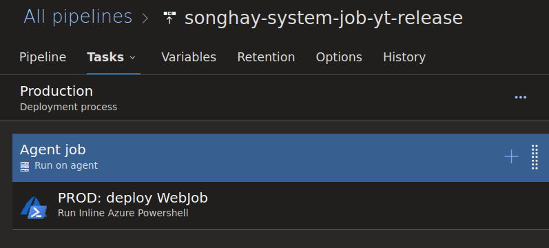
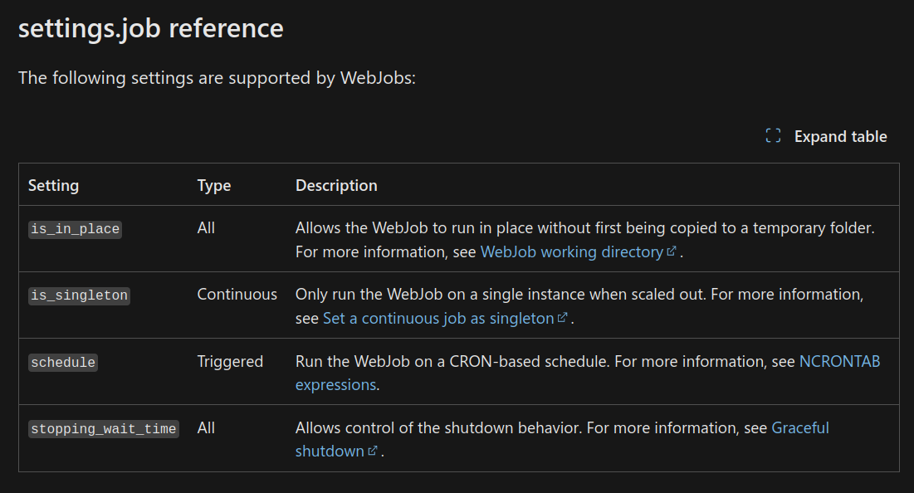
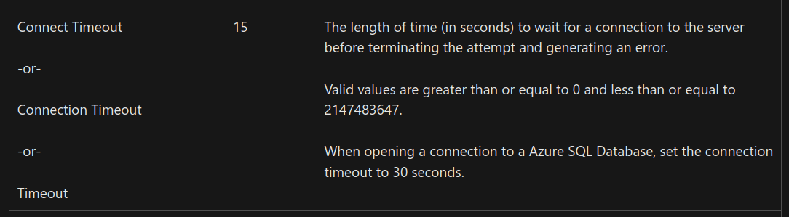
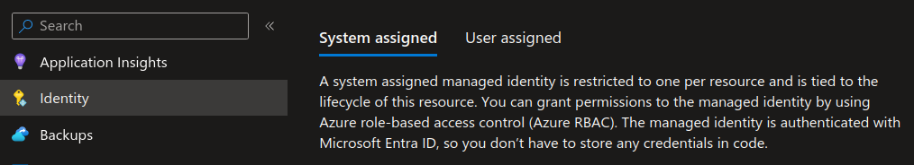
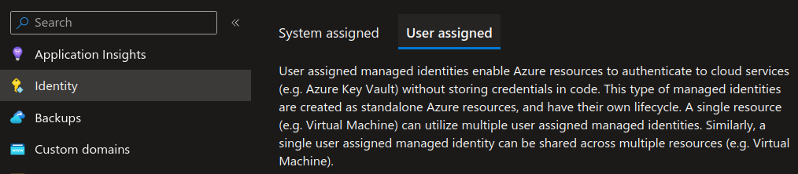
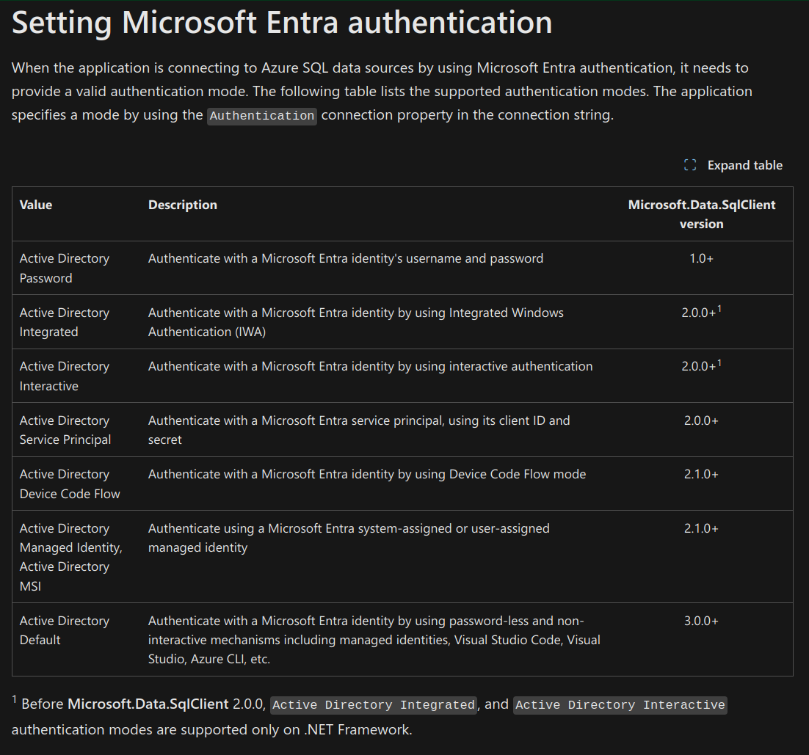

Azure WebJobs in 2023
Azure Web Jobs [📖 docs ] remains the ‘last resort’ when running code in the Microsoft cloud 🌩 When Azure Functions [📖 docs ] cannot run your ‘executable’ (likely because it is a tightly-coupled, vertical stack of cross-boundary asynchronous calls that allocates too many resources for more than 10 minutes), then Azure Web Jobs is your fallback of choice when your enterprise is still not using containers and the use dedicated virtual machines in the cloud is too expensive.
the Visual Studio publish experience has improved
An archived article from 2018 complains about the deployment experience, starting with the sentence, “Unfortunately, Microsoft messed up this feature in the worst way possible.” This situation as of 2023 has greatly improved. Most importantly Microsoft is no longer requiring a dedicated Azure WebJob project type as introduced by bloggers in 2017. This means that any console app can be deployed as an Azure Web Jobs executable because the Visual Studio publish experience packages the console app (including a run.cmd file) automatically.
[!important] Any console app can be deployed as an Azure Web Jobs executable because the Visual Studio publish experience packages the console app (including a
run.cmdfile) automatically.
See “Develop and deploy WebJobs using Visual Studio” 📖 for more details.
there is still no default command-line experience for publishing/deploying
The commands under az webapp webjob [📖 docs ] are mostly for reporting (there are a few for deleting and starting jobs). The large number of ways a job can be packaged is likely the cause for the lack:
The following file types are supported:
- .cmd, .bat, .exe (using Windows cmd)
- .ps1 (using PowerShell)
- .sh (using Bash)
- .php (using PHP)
- .py (using Python)
- .js (using Node.js)
- .jar (using Java)
What follows is a historical view of how one way of deployment works. I may help to compare what is written below with “How To Deploy Web App and Web Job In A Single Pipeline” by Rahul Pulikkot Nath #to-do . The method I used to package and deploy started with a run.ps1 file in the *.Shell project directory of the console app:
Set-Location $PSScriptRoot
$p = Start-Process Songhay.Player.Shell.exe -ArgumentList "PlayerYouTubeActivity" -NoNewWindow -PassThru -Wait
exit $p.ExitCode
This file was set to copy to the build output directory in the *.Shell.csproj file:
<ItemGroup>
<None Update="run.ps1">
<CopyToOutputDirectory>PreserveNewest</CopyToOutputDirectory>
</None>
</ItemGroup>
At the Solution level, I would have a azure-pipelines-shell.yml file like this:
name: $(System.TeamProject)_$(Build.DefinitionName)_$(Build.SourceBranchName)_$(Build.BuildId)
variables:
BuildConfiguration: 'Release'
RepoName: 'Songhay.Player'
trigger:
batch: 'false'
branches:
include:
- master
- releases/*
paths:
exclude:
- $(RepoName).Functions/*
- $(RepoName).Functions.Tests/*
- $(RepoName).Shell.Tests/*
- $(RepoName).Tests/*
- $(RepoName).Web/*
- $(RepoName).Web.Tests/*
resources:
- repo: self
steps:
- task: UseDotNet@2
displayName: 'Use .NET Core SDK 5.x'
inputs:
packageType: sdk
version: 5.x
- task: DotNetCoreCLI@2
displayName: 'dotnet restore'
inputs:
command: restore
projects: $(RepoName).sln
- task: DotNetCoreCLI@2
displayName: 'dotnet build'
inputs:
projects: $(RepoName).sln
arguments: '--configuration $(BuildConfiguration)'
- task: downloadsSecureFile@0
inputs:
fileInput: '0bbd144a-8c21-4a46-bc4d-8faff4fdecec'
targetPath: $(RepoName).Shell
targetName: 'app-settings.shared.json'
- task: DotNetCoreCLI@2
displayName: 'dotnet publish'
inputs:
command: publish
publishWebProjects: false
projects: '$(RepoName).Shell/*.csproj'
arguments: '/property:GenerateFullPaths=true /consoleloggerparameters:NoSummary --configuration $(BuildConfiguration) --output $(Build.ArtifactStagingDirectory) --self-contained false --runtime win-x64'
zipAfterPublish: true
- task: PublishBuildArtifacts@1
displayName: 'Publish Artifact: drop'
inputs:
PathtoPublish: '$(Build.ArtifactStagingDirectory)'
This script would be referenced by the Agent Job task in the release pipeline:

Then the Azure DevOps release pipeline would call azure-pipelines-deployment.ps1 (also placed on the Solution level). The Run Inline Azure Powershell task would run the following:
#Resource details :
$resourceGroupName = "songhay-system-resources";
$webAppName = "songhay-system"
$webJobName = "job-yt"
$webJobType="triggeredwebjobs"
$deploymentZipFileName="Songhay.Player.Shell.zip"
$Apiversion = "2015-08-01"
#Function to get Publishing credentials for the WebApp :
function Get-PublishingProfileCredentials($resourceGroupName, $webAppName) {
$resourceType = "Microsoft.Web/sites/config"
$resourceName = "$webAppName/publishingcredentials"
$publishingCredentials = Invoke-AzureRmResourceAction `
-ResourceGroupName $resourceGroupName `
-ResourceType $resourceType `
-ResourceName $resourceName `
-Action list `
-ApiVersion $Apiversion `
-Force
return $publishingCredentials
}
#Pulling authorization access token :
function Get-KuduApiAuthorisationHeaderValue($resourceGroupName, $webAppName) {
$publishingCredentials = Get-PublishingProfileCredentials $resourceGroupName $webAppName
return ("Basic {0}" -f [Convert]::ToBase64String([Text.Encoding]::ASCII.GetBytes(("{0}:{1}" -f
$publishingCredentials.Properties.PublishingUserName, $publishingCredentials.Properties.PublishingPassword))))
}
Write-Host "Preparing to publish WebJob $webJobName..."
Write-Host "Getting KUDU access token..."
$accessToken = Get-KuduApiAuthorisationHeaderValue $resourceGroupName $webAppname
#Generating header to create and publish the Webjob :
$Header = @{
'Content-Disposition' = 'attachment; attachment; filename=$deploymentZipFileName'
'Authorization' = $accessToken
}
$apiUrl = "https://$webAppName.scm.azurewebsites.net/api/$webJobType/$webJobName"
Write-Host "Calling ``$apiUrl``..."
Invoke-RestMethod `
-Uri $apiUrl `
-Headers $Header `
-Method put `
-InFile "$env:AGENT_RELEASEDIRECTORY\$env:BUILD_DEFINITIONNAME\drop\$deploymentZipFileName" `
-ContentType 'application/zip'
<#
📚 https://github.com/projectkudu/kudu/wiki/Deploying-a-WebJob-using-PowerShell-ARM-Cmdlets
#>
See “Using the Inline PowerShell VSTS task” by Peter Groenewegen 📖
the Azure App Service configuration settings override appsettings.json
I know from personal experience that Azure App Service configuration settings override appsettings.json. I have yet to find official Microsoft docs mentioning this. However, back in 2016 Mark Seemann speculated that:
As far as I can tell, it attempts to read configuration settings in this prioritized order:
- Try to find the configuration value in the Web Site's online configuration (see below).
- Try to find the configuration value in the .cscfg file.
- Try to find the configuration value in the app.config file or web.config file.
This convention makes it possible to deploy the same code to two different servers (e.g. a development and production server) with different app settings without having to modify any local configuration settings. We make these changes under the Configuration “blade” in the Azure Portal [📖 docs ].
the Settings.job file has been around for at least five years
The Azure Web Jobs SDK GitHub repo refers to the Settings.job file over twenty times while not approaching it in any repo-level documentation 😐 I know from #day-job experience that Visual Studio will auto-generate this file during their deployment experience. The leading purpose of this file is to save your “CRON expression” in the schedule property instead of entering it manually in the Azure Portal. Here is the full list of settings for this file:

the most important timeout setting: WEBJOBS_IDLE_TIMEOUT
The setting WEBJOBS_IDLE_TIMEOUT is the most important WebJobs environment variable [📖 docs ]. Idle time elapses when the job “has no CPU time or output” this is what often happens when the job is waiting for a database connection to open or waiting for a database query to finish. We can override the default setting of this environment variable under the Configuration “blade” in the Azure Portal [📖 docs ].
Here is the typical error message explicitly telling us to to change this setting:
System.AggregateException: One or more errors occurred. ---> Kudu.Core.Infrastructure.CommandLineException: Command 'cmd /c ""run.cmd""' was aborted due to no output nor CPU activity for 121 seconds. You can increase the SCM_COMMAND_IDLE_TIMEOUT app setting (or WEBJOBS_IDLE_TIMEOUT if this is a WebJob) if needed.
cmd /c ""run.cmd""
at Kudu.Core.Infrastructure.IdleManager.WaitForExit(IProcess process) in C:\Kudu Files\Private\src\master\Kudu.Core\Infrastructure\IdleManager.cs:line 45
By the way, SCM_COMMAND_IDLE_TIMEOUT is a build automation [📖 docs ] setting, having nothing to do with running production code.
Now, the second most important Azure Web Jobs setting is the timeout setting in any database connection strings in use for the job:

[📖 docs ]
Because Azure Functions is based on Azure Web Jobs, this setting, WEBJOBS_IDLE_TIMEOUT, has the same use and importance in Azure Functions.
yes, one app service can have system-assigned and user-assigned MIs simultaneously
The UX in the Azure Portal is not misleading:


The portal allows us to enable a system-assigned MI and allows us to add multiple user-assigned MIs—because one app service can have multiple ASP.NET applications and multiple Azure Web Jobs connecting to multiple ‘external’ resources (like a database). It makes sense to have a shared, user-assigned MI for a database and a system-assigned MI might be used for authentication purposes.
The database connection string can refer to the user-assigned MI like this:
Server=...;Database=...;Authentication=Active Directory Managed Identity;User Id=00000000-0000-0000-000000000000;Connection Timeout=3600
…where 00000000-0000-0000-000000000000 is the Object (principal) ID of the MI.
Note that, for Microsoft SQL Server, the Authentication value depends (sadly) on the version of Microsoft.Data.SqlClient in use. For details, see “Setting Microsoft Entra authentication”:

[📖 docs ]
For Entity Framework users, the version of Microsoft.Data.SqlClient in use is determined by the version of Entity Framework in use 😐